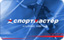
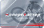
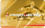

1.1. Клубная программа СПОРТМАСТЕР действует на территории РФ во всех магазинах СПОРТМАСТЕР, СПОРТМАСТЕР-ДИСКОНТ и в интернет-магазине www.sportmaster.ru.
1.2. Для участия в Клубной программе СПОРТМАСТЕР необходимо зарегистрироваться в качестве участника одним из следующих способов:
1.2.1.Совершить покупку на любую сумму в магазине СПОРТМАСТЕР, СПОРТМАСТЕР-ДИСКОНТ или в интернет-магазине www.sportmaster.ru, заполнить Анкету участника Клубной программы и получить Клубную карту (Клубная карта выдается бесплатно).
1.2.2. Пройти регистрацию участника Клубной программы на сайте www.sportmaster.ru, или в Мобильном Приложении СПОРТМАСТЕР, или в Мобильных приложениях компаний-партнеров СПОРТМАСТЕРА, или на сайтах, посвященных маркетинговым акциям СПОРТМАСТЕР. Совершение покупки для такого способа регистрации не требуется. После завершения регистрации Клиент может участвовать в Клубной Программе без получения Клубной карты (с помощью SMS-авторизации), или загрузить Мобильную Клубную Карту (МКК) или получить Клубную карту в любом магазине СПОРТМАСТЕР.
1.2.3. Заполнить Анкету участника Клубной программы и получить Клубную карту у промоутера в рамках маркетинговых акций СПОРТМАСТЕР.
1.3. Участники Клубной программы получают преференции от компании СПОРТМАСТЕР: скидки на товары, особые условия оказания сервисных услуг, дополнительные информационные услуги. Объем предоставляемых преференций зависит от Уровня участия в Клубной программе, достигнутого Клиентом (п.3).
1.4. Для каждого участника Клубной программы СПОРТМАСТЕР заводится персональный Бонусный счет. Совершая покупки и участвуя в акциях СПОРТМАСТЕР, участник накапливает Бонусы. Бонус – единица учета скидки на будущую покупку. Бонусами можно оплатить часть очередной покупки из расчета 1Бонус = 1рубль. Скидка может составить не более 30% от стоимости товара, подлежащей оплате.
1.5. Накопление Бонусов на Бонусный счет доступно во всех магазинах СПОРТМАСТЕР, СПОРТМАСТЕР-ДИСКОНТ и в интернет-магазине www.sportmaster.ru.
1.6. Оплата товаров Бонусами доступна во всех магазинах СПОРТМАСТЕР и в интернет-магазине www.sportmaster.ru. Оплата Бонусами товаров в магазинах СПОРТМАСТЕР-ДИСКОНТ не производится.
2.1. Для расходования Бонусов по Клубной программе участник должен пройти идентификацию. Идентификация осуществляется следующими способами:
Для накопления бонусов по Клубной программе допускается использование дополнительных способов идентификации:
2.2. Клубная карта выдается в следующих случаях:
2.2.1. Новым участникам Клубной программы Клубная карта выдается при заполнении Анкеты и совершении покупки на любую сумму в магазине СПОРТМАСТЕР, СПОРТМАСТЕР-ДИСКОНТ или в интернет-магазине www.sportmaster.ru.
2.2.2. Участникам, зарегистрировавшимся в Клубной программе на сайте www.sportmaster.ru, Клубная карта выдается по желанию в любом магазине СПОРТМАСТЕР или СПОРТМАСТЕР-ДИСКОНТ. Совершение покупки не требуется.
2.2.3. При заполнении Анкеты участника Клубной программы в рамках маркетинговых акций СПОРТМАСТЕР.
2.2.4. В случае утери Клубной карты (в соответствии с п. 6.1).
2.3. Услуга SMS-авторизации позволяет участникам Клубной программы СПОРТМАСТЕР использовать Бонусы с Клубной карты и получать на Клубную карту Бонусы за текущие покупки на основании авторизации по мобильному телефону (без предъявления Клубной карты или Мобильной Клубной карты).
2.3.1. Услуга доступна для использования во всех магазинах СПОРТМАСТЕР на территории РФ и в интернет-магазине СПОРТМАСТЕР (www.sportmaster.ru).
2.3.2. Участникам Клубной программы СПОРТМАСТЕР услуга предоставляется бесплатно.
2.3.3. Услуга становится доступна участникам Клубной программы:
2.3.4.Для использования услуги SMS-авторизации участнику Клубной программы необходимо:
При успешном выполнении перечисленных действий участник Клубной программы получает возможность использовать Бонусы с Клубной карты и получить Бонусы за текущую покупку. Условия начисления и использования Бонусов определяются общими условиями Клубной программы СПОРТМАСТЕР и не зависят от того, используется ли при покупке Клубная карта или SMS-авторизация.
2.3.5.Один подтверждающий код можно использовать только для одной покупки. Процесс SMS-авторизации необходимо проходить отдельно для каждой покупки.
2.3.6.Услуга может быть временно недоступна при проблемах с Интернет-каналом и при низком уровне сигнала / высокой загруженности сотовых сетей.
3.1. Клиенты подразделяются по Уровням участия в Клубной программе в зависимости от Накопленной суммы покупок. Накопленная сумма покупок - сумма покупок, совершённых Участником КП с применением КК, МКК и SMS-авторизации, и оплаченная из собственных средств Клиента (стоимость покупки, оплаченная Бонусами, не учитывается в сумме накопленных покупок). Учет Накопленной суммы покупок ведется в рублях и используется для перехода Участников КП на новые Уровни участия.
3.2. Существует три Уровня участия и соответствующих типа Клубных карт, выдаваемых Участнику Клубной программы:
| Уровень участия | Тип карты | Накопленная сумма покупок |
|---|---|---|
| Стандартный |  | от 1 до 15000 рублей |
| Серебряный |  | от 15001 до 150000 рублей |
| Золотой |  | свыше 150000 рублей |
3.3. Если Накопленная сумма покупок превышает порог, соответствующий более высокому Уровню участия, предоставление Преференций Участнику КП осуществляется в соответствии с условиями нового Уровня участия в КП вне зависимости от того, произведен ли обмен Клубной карты на Клубную карту нового типа. Обменять Клубную карту на Клубную карту нового типа Участник КП может в любом магазине СПОРТМАСТЕР, накопленная сумма покупок и накопленные Бонусы переносятся на новую Клубную карту.
3.4. Участникам Клубной программы, в зависимости от типа Клубной карты, предоставляются следующие преференции:
| Уровень участия в Клубной программе | Стандартный | Серебряный | Золотой |
|---|---|---|---|
| Тип карты | |||
| Накопленная сумма покупок | 1 – 15 000 руб. | 15 001 – 150 000 руб. | свыше 150 000 руб. |
| Ставка начисления Регулярных Бонусов за каждые полные 1 000 руб. покупки | 50 | 70 | 100 |
| Начисление Бонусов на Бонусный счет и оплата Бонусами части покупок в розничной сети | + | + | + |
| Дополнительные Информационные Сервисы (личный кабинет на www.sportmaster.ru, SMS- и e-mail информирование) | + | + | + |
| Специальные предложения на товары, представленные в розничной сети | + | + | + |
| Резервирование товара на 1 день | + | + | + |
| Выделенная линия в Справочной службе 88007777771 | - | - | + |
| Дополнительный гарантийный срок на товар | - | +30 дней | +60 дней |
| Обмен товара | 14 дней | 1 месяц | 2 месяца |
| Возврат Бонусами части стоимости Сервисных услуг, оплачиваемых в магазинах СПОРТМАСТЕР (кроме услуг доставки), % | 20 | 50 | 100 |
4.1. В рамках действия Клубной программы на Клубную карту начисляются Бонусы, которые могут быть использованы при последующих покупках в магазинах СПОРТМАСТЕР.
4.2. Существует 2 типа Бонусов, различных по условиям начисления и использования:
Регулярные Бонусы всегда начисляются за покупки в магазинах СПОРТМАСТЕР в соответствии с утвержденными правилами Клубной программы.
Условия начисления
В магазинах СПОРТМАСТЕР Бонусы начисляются за покупку любых товаров, кроме товаров со скидкой. В магазинах СПОРТМАСТЕР-ДИСКОНТ Бонусы начисляются за покупку любых товаров, включая товары со скидкой. Бонусы начисляются за каждую полную 1000 рублей покупки. Сумма начисляемых Бонусов определяется уровнем участия в Клубной программе:
| Уровень участия | Тип карты | Сумма регулярных Бонусов, начисляемых за 1000 рублей покупки |
|---|---|---|
| Стандартный | 50 | |
| Серебряный | 70 | |
| Золотой | 100 |
Возможности оплаты товаров
Единовременно Бонусами можно оплатить до 30% стоимости любых товаров в магазинах СПОРТМАСТЕР (кроме Подарочных карт, товаров «Лучшая цена» и товаров в магазинах СПОРТМАСТЕР-ДИСКОНТ) и Сервисных услуг, оплачиваемых в магазинах СПОРТМАСТЕР (кроме услуг доставки).
Период действия Бонусов
Зачисление на карту: в течение 1 дня после покупки (задержка возможна при проблемах Интернет-канала в магазине). Бонусы действуют с момента зачисления по 10 марта следующего календарного года включительно. 11 марта неиспользованные Бонусы за прошедший календарный год аннулируются.
Экстрабонусы начисляются дополнительно к регулярным Бонусам за покупки, соответствующие условиям маркетинговых акций, за дополнительные действия участников КП, или по инициативе компании СПОРТМАСТЕР в качестве дополнительной преференции участнику КП.
Условия начисления
Условия начисления экстрабонусов определяются условиями соответствующих маркетинговых акций СПОРТМАСТЕР. Экстрабонусы могут начисляться как за покупки, соответствующие условиям акции (например, возможны дополнительные условия по времени покупки, сумме покупки, приобретаемым товарам, магазине, где совершаются покупки) так и за совершение определенных действий в рамках Клубной программы (заполнение анкеты, подписка на новости и т.д.) Кроме этого. экстрабонусы могут быть начислены участнику Клубной программы по решению компании СПОРТМАСТЕР в качестве дополнительной преференции.
Возможности оплаты товаров
Условия оплаты товаров экстрабонусами определяются условиями акции. В большинстве случаев условия оплаты покупки экстрабонусами аналогичны условиям оплаты покупки регулярными Бонусами. В рамках некоторых акций возможны дополнительные ограничения по товарам, которые можно оплатить с помощью экстрабонусов, и магазинам, где возможна оплата.
Период действия Бонусов
Период зачисления и действия экстрабонусов определяется условиями соответствующей Акции. Как правило, срок действия экстрабонусов составляет от 1 недели до 1 месяца.
4.3. При оплате товара Бонусами:
4.4. В случае возврата товара владельцу Клубной карты возвращаются уплаченные денежные средства; израсходованные Бонусы восстанавливаются на Бонусном счете Клиента; начисленные за покупку Бонусы аннулируются. При возврате части покупки использованные Бонусы восстанавливаются пропорционально сумме возврата.
5.1. Участники Клубной программы СПОРТМАСТЕР подтверждают согласие на получение информации от Компании СПОРТМАСТЕР о специальных предложениях, о новых товарах и рекламных акциях по сетям электросвязи и по почтовой связи (включая, но не ограничиваясь: SMS-рассылки, e-mail-рассылки) и обработку своих персональных данных посредством сбора, записи, систематизации, накопления, хранения, уточнения, извлечения, использования, осуществляемую с использованием средств автоматизации, в том числе в информационно-телекоммуникационных сетях, или без использования таких средств в целях организации направления им специальных предложений, информации о новых товарах и рекламных акциях, обработки их запросов и обращений, одним из перечисленных способов:
5.2. Участники Клубной программы СПОРТМАСТЕР, подтвердившие согласие на получение информации от Компании СПОРТМАСТЕР, получают информацию по сетям электросвязи и по почтовой связи (включая, но не ограничиваясь: SMS-рассылки, e-mail-рассылки, телефония, сеть Интернет и мобильные устройства) следующего содержания:
Периодичность направления информации определяется компанией СПОРТМАСТЕР.
5.3. Участники Клубной программы СПОРТМАСТЕР могут отказаться от получения информации от компании СПОРТМАСТЕР, изменив настройки в Личном кабинете на сайте www.sportmaster.ru, обратившись в Справочную службу СПОРТМАСТЕР по тел: 8 800 777 777 1 или по email: contact@sportmaster.ru. Для отказа от получения информации необходимо сообщить номер Клубной карты или номер мобильного телефона / адрес email, на который оформлена подписка.
6.1. В случае утери Клубной карты, участник может продолжить использование преференций Клубной программы без Карты с помощью SMS-авторизации (п. 2.4.) При успешной SMS-авторизации в магазине СПОРТМАСТЕР по желанию клиента ему может быть выдана пластиковая Клубная карта взамен утерянной. Если SMS-авторизация невозможна, новая Клубная карта может быть выдана при предъявлении документа удостоверяющего личность (желательно наличие чека, по которому совершались покупки с предъявлением Клубной карты). Утерянная Клубная карта блокируется, общая сумма покупок и Бонусы, накопленные на утерянной карте, переносятся на новую. При несовпадении данных, указанных в паспорте, с данными указанными в Анкете, Клубная карта не восстанавливается.
6.2. В случаях кражи и утери Клубной карты ООО «Спортмастер» рекомендует незамедлительно обратиться в единый Контакт-центр по телефону: 8 (800) 777-777-1 для блокировки карты. Если имеющиеся на потерянной/украденной карте бонусы были потрачены до того момента, как карта была заблокирована, претензии по восстановлению бонусов не принимаются, потраченные бонусы не восстанавливаются.
Клубная карта является собственностью ООО «Спортмастер». Компания оставляет за собой право блокировать карту и соответствующий ей Бонусный счет клиента в Клубной программе в случае возникновения неправомерной активности по карте или нарушения условий Клубной программы владельцем карты без объяснения причины.
6.3. Участники Клубной программы СПОРТМАСТЕР также соглашаются на передачу своих персональных данных организациям, осуществляющим запись, систематизацию, накопление, уточнение, хранение, извлечение, непосредственно осуществляющим направление специальных предложений, информаций о новых товарах и рекламных акциях, обработки запросов и обращений, а так же осуществляющих уничтожение персональных данных.
6.4. При покупке Подарочной карты СПОРТМАСТЕР начисление Бонусов производится согласно типу Клубной карты.
6.5. При покупке Подарочной карты оплата Бонусами невозможна.
6.6. При оплате товара Подарочной картой также возможна оплата Бонусами (согласно п. 4.2). Бонусы начисляются на часть суммы покупки, оплаченную денежными средствами. На часть суммы покупки, оплаченную Подарочной картой или Бонусами, Бонусы не начисляются.
6.7. Клубная карта является собственностью ООО «Спортмастер» и должна быть безвозмездно возвращена собственнику по первому его требованию.
6.8. Участник может направлять свои претензии Компании любым удобным для него способом.
6.9. Программа действует бессрочно. Все Клубные карты действительны вне зависимости от срока, указанного на обратной стороне карты.
6.10. Компания СПОРТМАСТЕР оставляет за собой право:
6.10.1. изменять Условия участия в Клубной программе в одностороннем порядке путем изложения новой редакции Правил участия в Клубной программе на сайте www.sportmaster.ru;
6.10.2. закрыть программу, уведомив ее участников за один месяц до предстоящего закрытия и разместив информацию на сайте www.sportmaster.ru и в магазинах розничной сети.